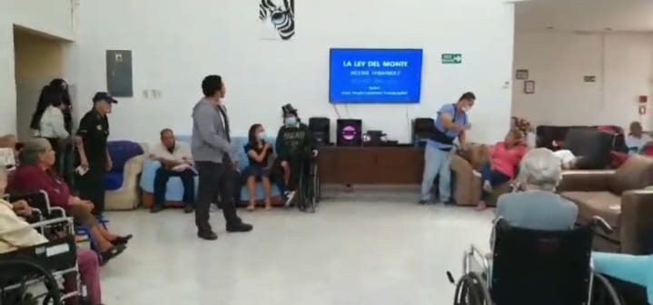
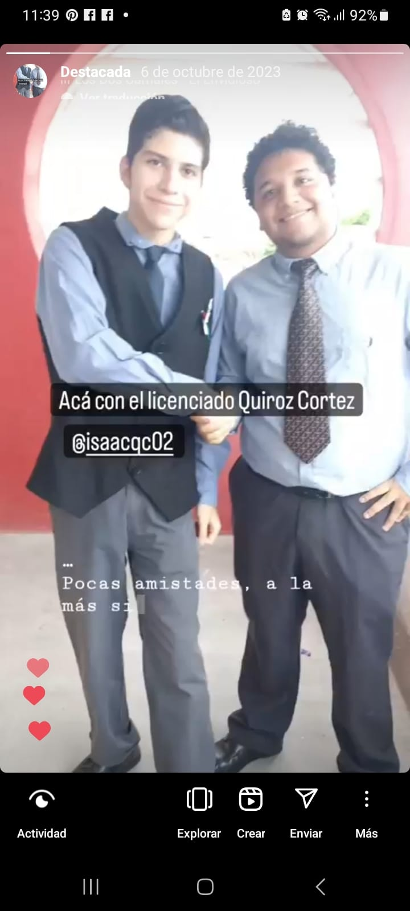

El camino hacia el futuro
COBAC
Mi Experiencia
Entre a Cobac en el año 2021 recien saliendo de una de las peores
partes de la pandemia por covid-19, fue un momento bastante extraño
pues no sabia que me depararia en esta nueva etapa, veniamos de clases
en linea y poco a poco se me olvidaba lo que era estar en clases
presenciales; como tal, esta nueva etapa fue bastante problematica para
muchos de nosotros pues veniamos de un momento donde las clases eran
virtuales y perdimos algunas nociones de lo que era tener una educacion
presencial, realmente no teniamos una idea de lo que afectaba la pandemia
en nuestro ser
Antes de entrar al primer semestre, yo y varios de mis compañeros entramos
a una especie de "Semestre 0" que basicamente trataba de repasar todos los
conocimientos basicos para poder entrar al primer semestre sin mayor problema.
Durante este primer momento las cosas fueron un tanto complicadas, teniamos que
llevar careta y cubrebocas a la escuela, ademas de tener que separarnos entre
nosotros bastante para evitar la enfermedad. A pesar de esto realmente fue un
momento bastante llevadero pues junto con mis nuevos amigos logramos que las
clases pasaran rapido.
Durante ese periodo mis clases constaban del siguiente horario:
| Materias |
Lunes |
Martes |
Miercoles |
Juevez |
Viernes |
| 12:00pm-1:00pm |
Español |
Fisica |
Matematicas |
Fisica |
Ingles |
| 1:00pm-2:00pm |
Matematicas |
Español |
Ingles |
Quimica |
Fisica |
| 2:00pm-3:00pm |
Fisica |
Ingles |
Quimica |
Ingles |
Matematicas |
| 3:00pm-4:00pm |
Quimica |
Matematicas |
Fisica |
Español |
Español |
| 4:00pm-5:00pm |
Fisica |
Ingles |
Quimica |
Matematicas |
Fisica |
*Datos de referencia no exactos*
El Inicio
Al entrar al primer semestre las cosas cambiaron un poco, ya no era como
la secundaria, ahora me tenia que aplicar mas, fue durante este periodo
donde empeza a conocer el por que de que las cosas se habian vuelto mas
complicadas, pero antes de que me pudiera adaptar a las clases presenciales,
de la nada otra vez volvimos a clases virtuales, fue una lastima, ya que no
pudimos convivir mucho como compañeros de forma presencial. De este semestre
no tengo mucho que agregar aparte de la dificultad de haber estado en clases
virtuales otra vez.
En el segundo semestre el juego cambio totalmente, ahora era 100% presencial,
gracias a dios pude conocer a mis nuevos compañeros y tener aun mas confianza
con los viejos, fue durante este periodo donde nos llevaron a un asilo de
ancianos, ahi fue donde por primera vez pude mostrar ante mis compañeros
uno de mis talentos que era cantar.

En ese momento yo me sentia totalmente euforico, no era una hazaña importante sin
embargo era algo que me hacia parecer especial por sobre todos, ese momento eran
mio y de nadie mas, fue por ese preciso momento, donde el escenario se convirtio
en mio totalmente
El Segundo Año
A partir de mi entrada a Tercer y cuarto semestre las cosas cambiaron en gran medida,
sobretodo por el ritmo de trabajos, los cuales cada vez eran mas extensos y complejos.
Tambien durante este periodo, me di cuenta que ya me habia acostumbrado al ritmo escolar
por lo que pude empezar a excentar una gran cantidad de materias, llegando al punto de no
tener que presentarme a ningun examen ordinario.
Las amistades realizadas, durante este periodo se vieron fuertemente apoyadas entre nosotros
fue una bonita etapa donde logramos hacer lazos mas fuertes y tener mas confianza entre nosotros,
tal es asi, que durante una actividad de la Maestra Lily Tenorio, fuimos vestidos de forma
formal y la verdad nos sentimos bastante comodos al no recibir criticas ni ningun tipo de
comentario negativo de parte de nuestros compañeros

Fue una experiencia bastante bonita el crear una marca con mis amigos y yo, la marca que
hicimos fue "Azteck Technologies", curiosamente sigo usandola como mi firma personal
pues mis amigos no les interesa la marca asi que la uso como algo que me define y que es
mio personalmente. Azteck no solo representa una marca sin valor alguno, representa el
esfuerzo que hicimos todos nosotros para que funcionara, y quien sabe, quiza algun dia
con otro nombre oh con el mismo, logre que sea una empresa formal.
El Inevitable Final
Todo el trayecto a lo largo de la preparatoria fue un camino cuesta arriba, sobretodo por
las dificultades que ah habido, sobretodo las enfermedades que han aquejado a los mios y a mis
cercanos, pero realmente no es posible evitar que algo asi suceda, es natural, y la vida siempre
tendra dificultades, pero somos nosotros los que decidimos como afrontarla, y que hacer con lo que
nos pasa en nuestro dia a dia